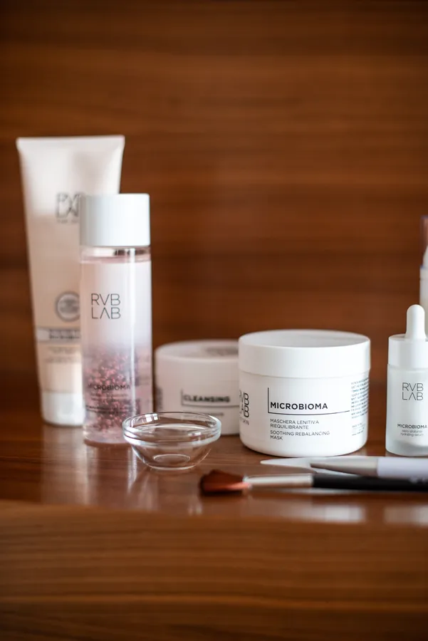

RVB LAB
RVB LAB to włoska marka kosmetyków profesjonalnych, stworzona z myślą o zaawansowanej, skutecznej i bezpiecznej pielęgnacji skóry. Jej formuły łączą innowacyjne technologie z najwyższej jakości składnikami aktywnymi, aby przywrócić skórze zdrowy wygląd, blask i komfort.
Produkty RVB LAB powstają w oparciu o wieloletnie doświadczenie kosmetologów, dzięki czemu odpowiadają na potrzeby różnych typów cery - od suchej i odwodnionej, po wrażliwą czy wymagającą intensywnej regeneracji. W ofercie marki znajdują się linie dedykowane nawilżaniu, odżywianiu, działaniu anti-aging oraz ochronie skóry przed negatywnymi czynnikami środowiskowymi.
Wszystkie kosmetyki RVB LAB są opracowywane i produkowane we Włoszech, co gwarantuje najwyższą jakość i dbałość o każdy szczegół. To pielęgnacja, której ufają profesjonaliści w gabinetach kosmetycznych na całym świecie.
